1. Attention 机制
1a. 背景知识
我们最为熟悉的NMT模型便是经典的Seq2Seq, 这篇文章从一个Seq2Seq模型开始介绍, 然后进一步看如何将Attention应用到NMT中.
在Seq2Seq模型中, 一般使用两个RNN, 一个作为编码器, 一个作为解码器：编码器的作用是将输入数据编码成一个特征向量, 然后解码器将这个特征向量解码成预测结果.
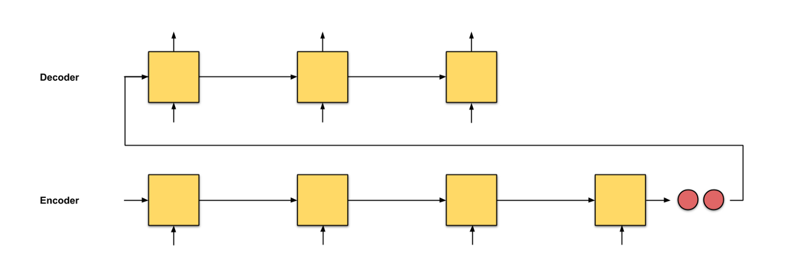这个模型的问题是只将编码器的最后一个节点的结果进行了输出, 但是对于一个序列长度特别长的特征来说, 这种方式无疑将会遗忘大量的前面时间片的特征:
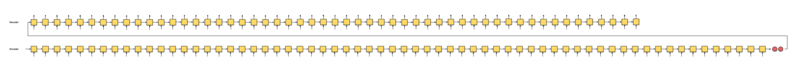既然如此, 与其输入最后一个时间片的结果, 不如将每个时间片的输出都提供给解码器. 那么解码器如何使用这些特征就是我们这里介绍的Attention的作用.
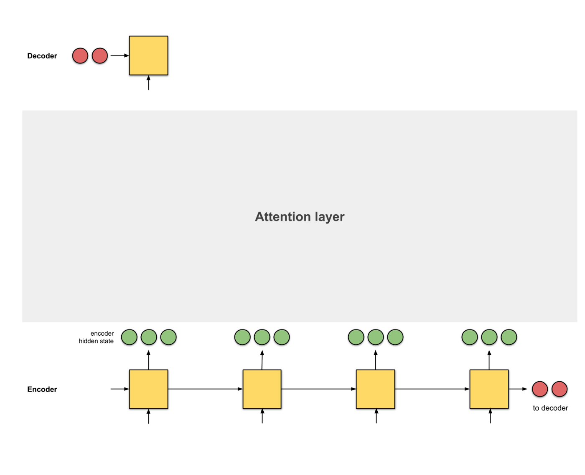在这里, Attention是一个介于编码器和解码器之间的一个接口, 用于将编码器的编码结果以一种更有效的方式传递给解码器. 一个特别简单且有效的方式就是让解码器知道哪些特征重要, 哪些特征不重要, 即让解码器明白如何进行当前时间片的预测结果和输入编码的对齐. Attention模型学习了编码器和解码器的对齐方式, 因此也被叫做对齐模型 (Alignment Model).
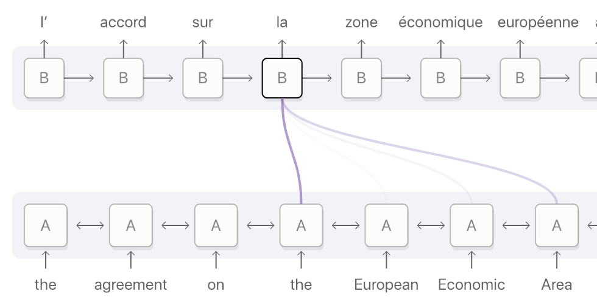Attention有两种类型, 一种是作用到编码器的全部时间片, 这种Attention叫做全局 (Global) Attention, 另外一种只作用到时间片的一个子集, 叫做局部 (Local) Attention.
1b. Attention可以分为4步:
-
生成编码节点 将输入数据依次输入到RNN中, 得到编码器每个时间片的隐层状态的编码结果 (绿色), 并将编码器的最后一个输出作为解码器的第一个输入隐层状态 (红色, decoder hidden state):
-
为每个编码器的隐层状态计算一个得分 使用当前编码器的当前时间片的隐层状态和解码器的隐层状态计算一个得分, 得分的计算方式有多种:
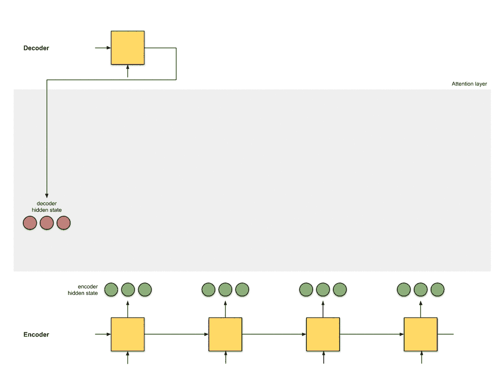 -
使用softmax对得分进行归一化 将softmax作用到step 2得到的score之上, 得到和为1的分数:
-
使用score对隐层状态进行加权 将score以及隐层状态进行点乘操作, 得到加权之后的特征, 这个特征也叫做对齐特征 (Alignment Vector) 或者注意力特征 (Attention Vector):
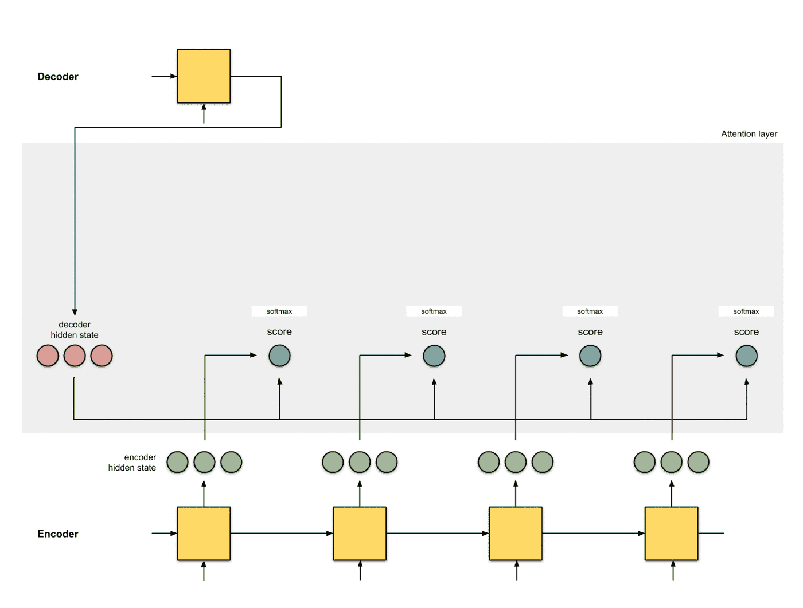 -
加和特征向量 这一步是将加权之后的特征进行加和, 得到最终的编码器的特征向量:
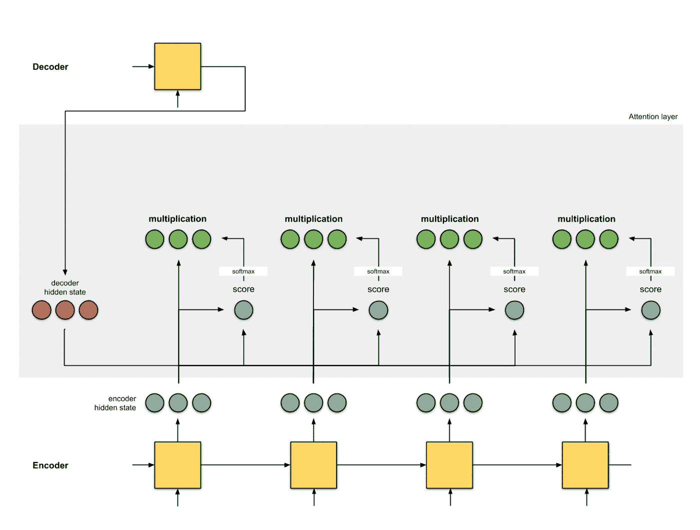 -
将特征向量应用的解码器 最后一步是将含有Attention的编码器编码的结果提供给解码器进行解码, 注意每个时间片的Attention的结果会随着decoder hidden state的改变而更改:
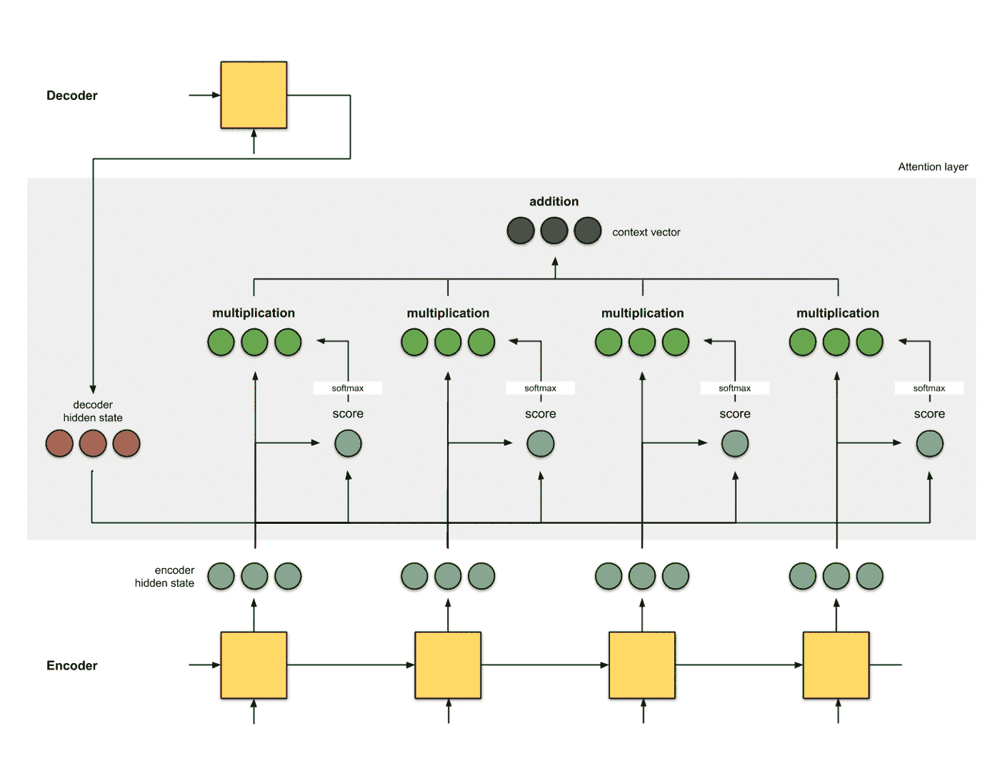
2. 经典 Attention 模型
2a. Bahdanau et. al (2015)
-
编码器是双向GRU, 解码器是单向GRU, 解码器的初始化输入是反向GRU的输出;
-
Attention操作选择的是additive/concat;
-
解码器的输入特征是上一个时间片的预测结果和解码器的编码结果拼接而成的;
-
BLEU值为26.75
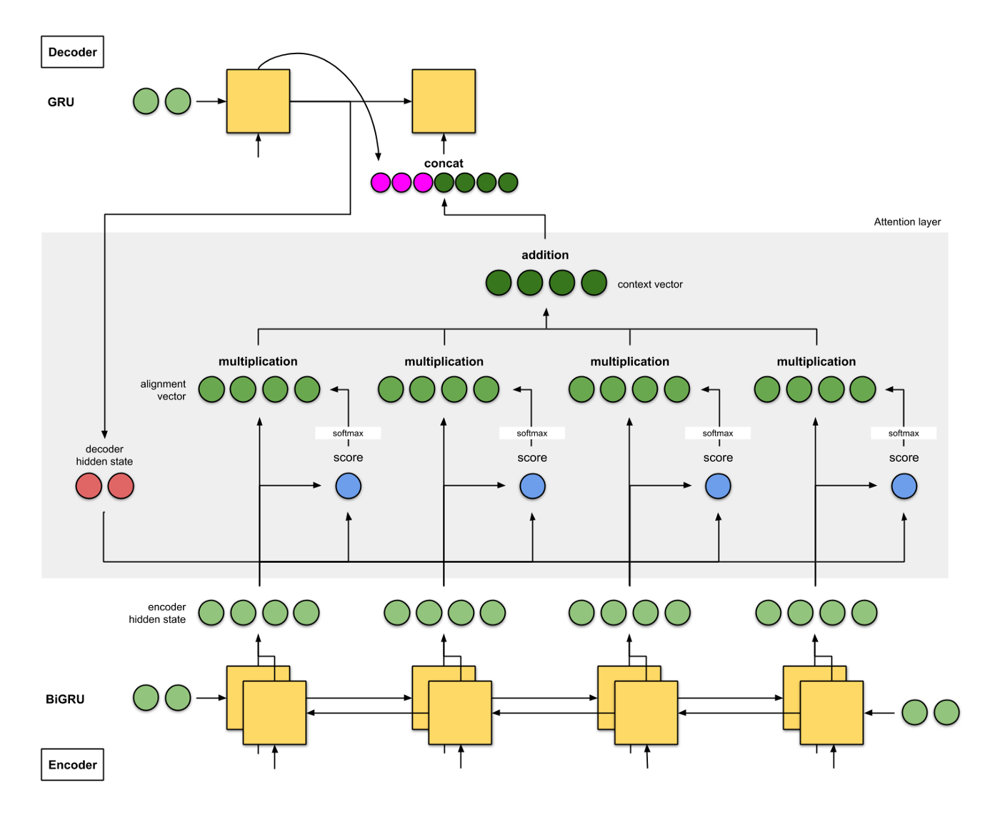
2b. Luong et. al (2015)
-
编码器和解码器都是两层的LSTM;
-
解码器的初始化隐层状态分别是两个解码器的最后一个时间片的输出;
-
在论文中他们尝试了(i) additive/concat, (ii) dot product, (iii) location-based, 以及(iv) ‘general’;
-
将解码器得到的结果和编码器进行拼接, 送入一个FFNN中得到最终的结果;
-
BLEU值为25.9.
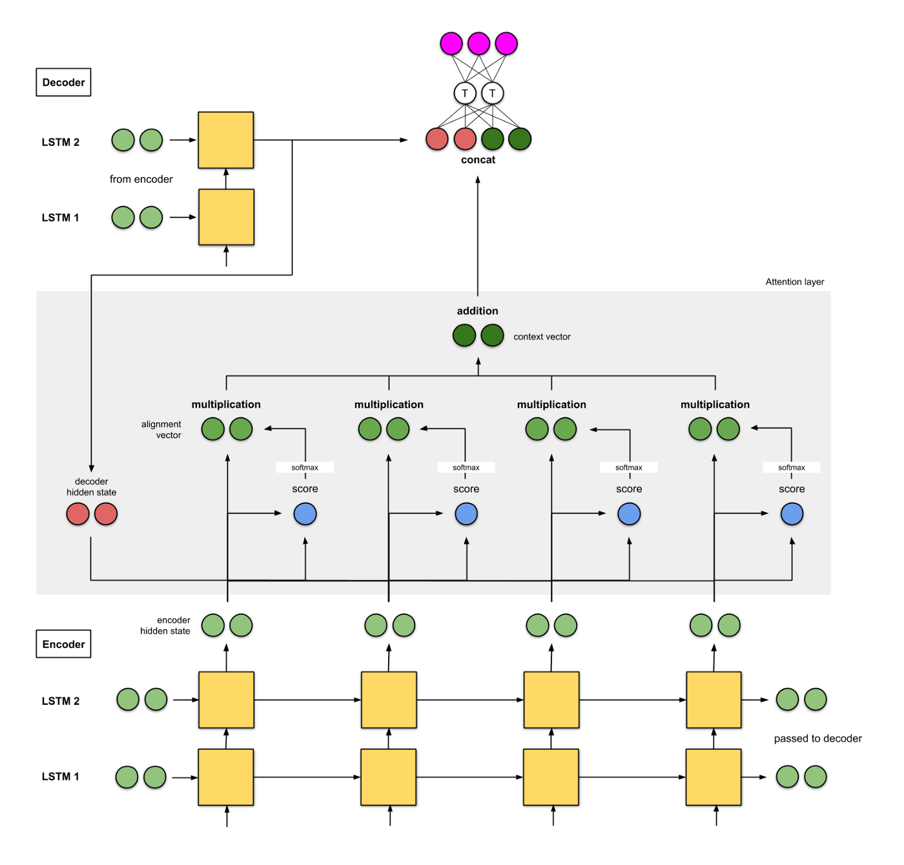
2c. Google’s Neural Machine Translation (GNMT)
-
编码器是一个8层的LSTM。第一个层是双向的LSTM，把它们的特征拼接够提供给第二层，在后面的每一层LSTM都使用残差进行连接；
-
解码器是使用的8层单向LSTM并使用残差结构进行连接；
-
score function和 2a 相同，为addition/concat；
-
拼接方式也和 2a 相同；
-
英法翻译的BLEU为38.95，英德翻译的BLEU为24.17。
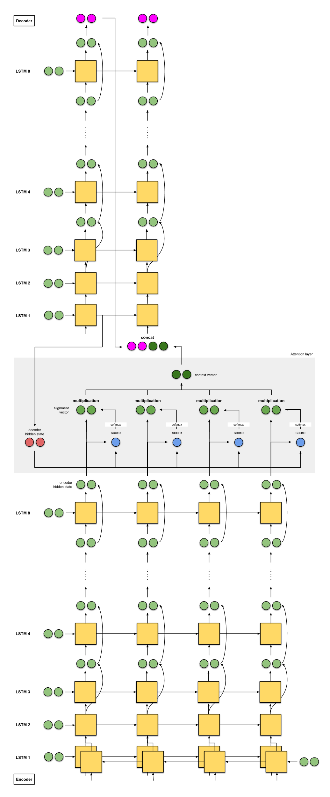